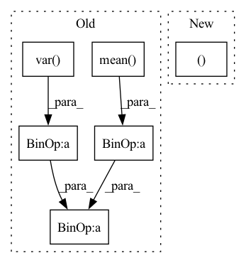

Pattern ID :39577

Before Change
def update(self, x: np.ndarray):
n = x.shape[0]
n_new = self.n + n
mean = x.mean(axis=0)
delta = mean - self.mean
mean_new = self.mean + delta * n / n_new
var = x.var(axis=0)
m_a = self.var * self.n
m_b = var * n
m_2 = m_a + m_b + delta ** 2 * self.n * n / n_new
var_new = m_2 / n_new
self.mean = mean_new
self.var = var_new
After Change
self.reduce_mean = reduce_mean
def update(self, x):
merge_map(update, (x, self.mean, self.var), rms=self)
self.n = self.n_new
def normalize(self, x):
In pattern: SUPERPATTERN
Frequency: 3
Non-data size: 6
Instances
Fragment ID: 112640566
Project Name: jjccero/pbrl
Commit Name: 7d372d4b72769adbe0829f596da31acaeddfa9bb
Time: 2022-07-08
Author: 1127986703@qq.com
File Name: pbrl/common/rms.py
M Class Name: RunningMeanStd
N Class Name: RunningMeanStd
M Method Name: update(2)
N Method Name: update(2)
M Parent Class:
N Parent Class:
M File Name: pbrl/common/rms.py
N File Name: pbrl/common/rms.py
M Start Line: 21
M End Line: 34
N Start Line: 58
N End Line: 60
'>
Before Change
dim = shape[-1]
x = x.view(-1, dim)
x_mean = x.mean(dim = 1, keepdim= True)
x_var = x.var(dim = 1, unbiased = False, keepdim = True)
scaled_x = (x - x_mean)
sqrt_var = (x_var + eps) ** 0.5
inv_var = 1. / sqrt_var
normed_x = scaled_x * inv_var
ctx.save_for_backward(scaled_x, normed_x, gamma, sqrt_var, inv_var)
out = rearrange(gamma, "d -> () d") * normed_x + rearrange(beta, "d -> () d")
return out.view(*shape)
@classmethod
After Change
shape = x.shape
dim = shape[-1]
x = x.view(-1, dim)
n_rows, n_cols = x.shape
expanded_gamma = gamma[None, :].expand(n_rows, -1)
expanded_beta = beta[None, :].expand(n_rows, -1)
'>
Fragment ID: 112640567
Project Name: lucidrains/triton-transformer
Commit Name: c4a68c1023e8ad92b8f2beeb5a5d5c78fb2cda34
Time: 2021-09-22
Author: lucidrains@gmail.com
File Name: triton_transformer/triton_transformer.py
M Class Name: _layernorm
N Class Name: _layernorm
M Method Name: forward(6)
N Method Name: forward(6)
M Parent Class: autograd.Function
N Parent Class: autograd.Function
M File Name: triton_transformer/triton_transformer.py
N File Name: triton_transformer/triton_transformer.py
M Start Line: 265
M End Line: 277
N Start Line: 337
N End Line: 370
'>
Before Change
Returns:
Normalized audio tensor with same shape as input
mean = audio.mean(1, keepdim=True).detach()
std = (audio.var(1, keepdim=True).detach() + self.div_guard).sqrt()
return (audio - mean) / std
After Change
).int()
return (
normalize_tensor(audio, attention_mask, div_guard=self.div_guard),
audio_lengths,
)
'>
Fragment ID: 112640602
Project Name: scart97/thunder-speech
Commit Name: 05cbe02b3779b4bafc6dbd1914e490e47893b6da
Time: 2021-11-30
Author: scart.lucas@gmail.com
File Name: src/thunder/wav2vec/transform.py
M Class Name: Wav2Vec2Preprocess
N Class Name: Wav2Vec2Preprocess
M Method Name: forward(3)
N Method Name: forward(2)
M Parent Class: nn.Module
N Parent Class: nn.Module
M File Name: src/thunder/wav2vec/transform.py
N File Name: src/thunder/wav2vec/transform.py
M Start Line: 29
M End Line: 31
N Start Line: 30
N End Line: 49